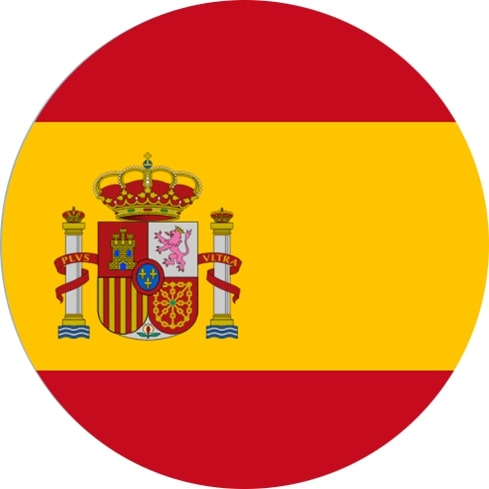
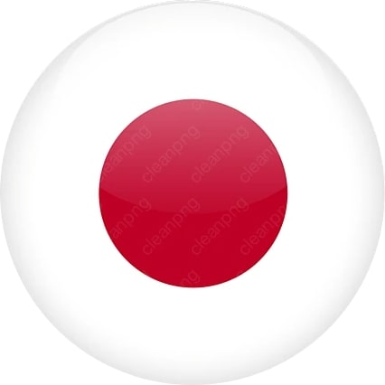
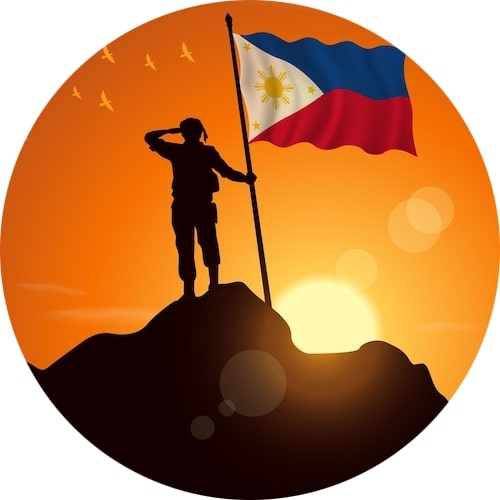
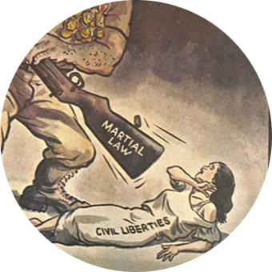
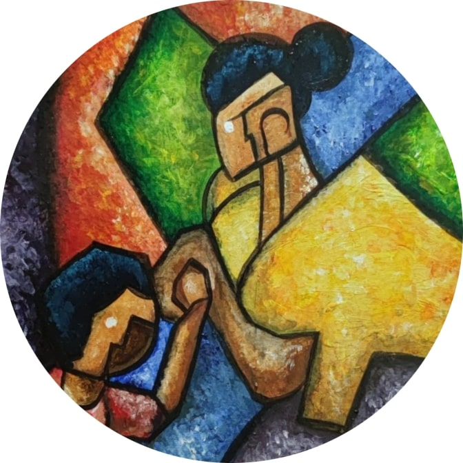

Timeline
Pre-Colonial Period (Before 1521)
Before colonization, Filipino art was deeply connected to everyday life, nature, and spirituality. Indigenous groups created petroglyphs, pottery, woven textiles, tattoos, and wood carvings as expressions of identity and belief.
Before colonization, Filipino art was deeply connected to everyday life, nature, and spirituality. Indigenous groups created petroglyphs, pottery, woven textiles, tattoos, and wood carvings as expressions of identity and belief.

Spanish Colonial Period (1521–1898)
Spanish colonization came a strong influence from Catholicism. Art became centered on religious themes, such as paintings of saints, church murals, and wooden sculptures.
Spanish colonization came a strong influence from Catholicism. Art became centered on religious themes, such as paintings of saints, church murals, and wooden sculptures.
American Period (1898–1946)
American rule introduced a more secular and academic approach to art. Schools like the UP School of Fine Arts trained artists in realism and classical techniques.
American rule introduced a more secular and academic approach to art. Schools like the UP School of Fine Arts trained artists in realism and classical techniques.

Japanese Occupation (1942–1945)
Art during this time was limited and controlled. Some artists created works that subtly showed patriotism and resistance, despite the threat of censorship. Art became a silent protest against the hardships of war.
Art during this time was limited and controlled. Some artists created works that subtly showed patriotism and resistance, despite the threat of censorship. Art became a silent protest against the hardships of war.

Post-War / Modern Period (1946–1970s)
After WWII, Filipino artists began to challenge traditional forms and explore modernism. Led by Victorio Edades, the Thirteen Moderns introduced new styles like abstract, cubism, and expressionism. Murals and sculpture became more expressive.
After WWII, Filipino artists began to challenge traditional forms and explore modernism. Led by Victorio Edades, the Thirteen Moderns introduced new styles like abstract, cubism, and expressionism. Murals and sculpture became more expressive.

Martial Law Era (1970s–1986)
Under Marcos’ dictatorship, art turned political and revolutionary. Artists used visual art to express criticism of social injustice, poverty, and oppression.
Under Marcos’ dictatorship, art turned political and revolutionary. Artists used visual art to express criticism of social injustice, poverty, and oppression.

Contemporary Period (1986–Present)
After the EDSA Revolution, Philippine art embraced freedom, experimentation, and global influence. Artists now use multimedia, digital tools, installations, and performance art.
After the EDSA Revolution, Philippine art embraced freedom, experimentation, and global influence. Artists now use multimedia, digital tools, installations, and performance art.